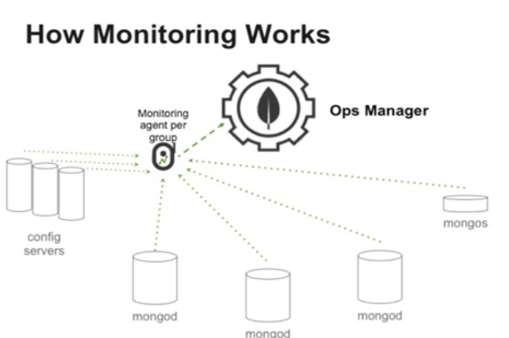
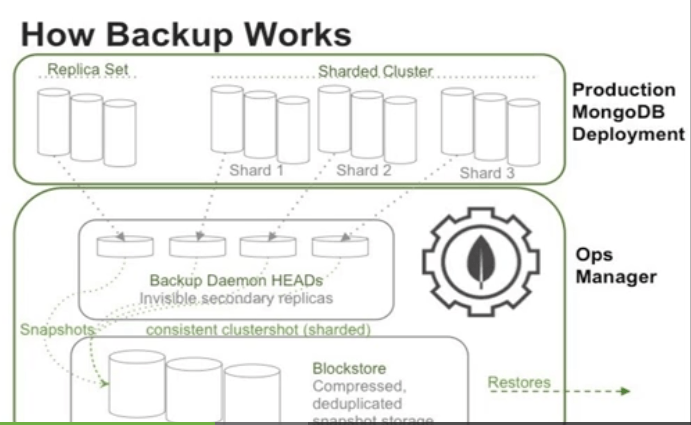

考虑部署实施的复杂度，一直没上MongoDB集群，但现在海量数据一来，单机性能就扛不住了，本文记录MongoDB集群的基础知识。
Mongodb 有三种集群方式的搭建： Replica Set ，Sharding 和 Master-Slaver
基本概念
- Chunck（块）：一个区间的数据称为一个数据块,是一个逻辑概念，物理存储并不连续，默认64M,可通过启动时附加’—chunkSize N’参数设置块大小
- Vertical Scaling（垂直扩展）：CPU/RAM/IO等硬件层扩展，有云端部署和硬件扩展的瓶颈
- Sharding（水平分片）：逻辑上是一个数据库，但物理存储上分开独立存储
- Balancing（平衡）：当存在多个可用的分片，且块的数量足够多，mongodb的balancer（平衡器）会把数据迁移到其他分片上
- mongos：mongos是用户和群集间的交互点，其职责是隐藏分片内部的复杂性并向用户提供一个简洁的单服务器接口，mongos会将所有用户请求转发到恰当的分片上。
- config server（配置服务器）：配置服务器包含了有关集群的最完整可靠的信息以供所有人（分片、mongos进程和系统管理员）访问。
集群的构造
一个MongoDB集群基本由3类进程组成： shards（存储数据）, mongos(路由器）、 config servers（配置服务器）
Shard Server
即存储实际数据的分片每个Shard 可以是一个mongod实例也可以是一组mongod实例构成的Replica Set。为了实现每个Shard内部的auto-failover，MongoDB官方建议每个Shard为一组Replica Set。
Config Server
为了将一个特定的collection 存储在多个shard 中需要为该collection指定一个shard key例如{age: 1} shard key 可以决定该条记录属于哪个chunk。Config Servers 就是用来存储所有shard 节点的配置信息、每个chunk 的shard key 范围、chunk 在各shard 的分布情况、该集群中所有DB 和collection 的sharding 配置信息。
Route Process
路由客户端由此接入，然后询问Config Servers 需要到哪个Shard 上查询或保存记录再连接相应的Shard 进行操作，最后将结果返回给客户端。客户端只需要将原本发给mongod的查询或更新请求原封不动地发给Routing Process而不必关心所操作的记录存储在哪个Shard 上。
Replica Set（复制）
定义
复制是在多台服务器之间同步数据的过程。
容灾性
由于在不同的数据库服务器上拥有多个数据镜像，复制可以有效的防止由于单台服务器故障而导致的数据丢失。复制还能够帮助我们从硬件故障或是服务中断中恢复数据。我们也可以通过增加复制节点来将其用于灾难恢复、报表或是备份。
读写分离
在某些情况中，我们可以通过复制的方式来提高读的性能。客户端可以将读与写请求分别发送到不同的服务器上。我们还能够通过在其他数据中心建立分布式复制节点的方式来做异地冗灾，以进一步提高可用性。
Sharding（分片）
定义
sharding（分片）是使用多个机器存储数据的方法,MongoDB使用分片以支持巨大的数据存储量与对数据操作.
为了解决这些问题,有两个基本的方法: 纵向扩展 和 分片 .
分片的目的：高数据量和吞吐量的数据库应用会对单机的性能造成较大压力,大的查询量会将单机的CPU耗尽,大的数据量对单机的存储压力较大,最终会耗尽系统的内存而将压力转移到磁盘IO上.
一个分片可由多台服务器组成（每台服务器都有一份分片数据的Replica set副本）
根据片键（key）分片[a,b)，MongoDB会在不同分片区间移动数据子集
MongoDB集群（分片）安装与配置方法图解
shard key(片键)
shard key大小不能超过512 bytes.
分片后shard key不可改变，除非重建collection
小基数片键
小基数片键：片键值数量有限
适用的键：应使用组合片键(一个片键包含2个字段），请确保第二个字段有足够的值供MongoDB用来进行分割
升序片键
适用于任何升序排列的键值，而并不必须是时间戳，包括日期、自增主键。
只要键值趋于无穷大，就会面临单一且不可分散的热点问题
随机片键
初衷是为了避免热点，会选择一个随机值的字段来分片。
数据量变大后会给RAM增加压力，且会引发大量的磁盘IO
好片键
具有良好的数据局部性（data locality）特征，但又不会太局部而导致热点出现。
准升序键+搜索键｛coarselyAscending:1，search:1｝，coarselyAscending用来控制数据局部化，search字段则是数据上常用的一个检索字段。
coarselyAscending键的每个值最好能对应几十到几百个数据块，如月份（2015-12）
search键则应当是应用程序通常都会依据其进行查询的字段，如用户信息、文件名称、或GUID等
Master-Slaver（主从）
对于Mongodb来说，并不推荐使用Master-Slave架构，因为Master-Slave其中Master宕机后不能自动恢复，推荐使用Replica Set，除非Replica的节点数超过50，才需要使用Master-Slave架构，正常情况是不可能用那么多节点的。
主从架构一般用于备份或者做读写分离。由两种角色构成：
主(Master)
可读可写，当数据有修改的时候，会将oplog同步到所有连接的salve上去。
从(Slave)
只读不可写，自动从Master同步数据。
mongodb集群监控
在线：Mongodb Cloud Manager
离线：MongoDB Management Service(MMS)


mongodb gui tools
MongoVUE1.6.9 在Mongodb3.2.0版本不可用了，不得不寻找替代品
官方推荐工具列表
亲测觉得不错的GUI工具
- 3T MongoChef 提供64位
- mongobooster